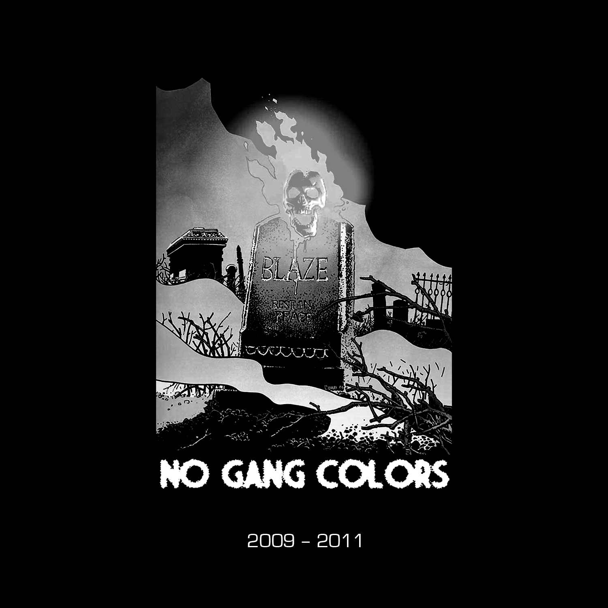

Live Set (2011)
01. NGC Live Set Intro (Waka Flocka Flame - "Uh Huh" Edit)
Demo, Summer '09 (2009) / This Is Your God (2010) [Instrumentals]
01. Killer Season
02. This Jug Kills Fascists
03. Nightmarecatcher
04. Who Fed My Indian?
05. Baby In A Backpack
06. Chicago Churches
07. Darkman
Honorary Cop (2011)
01. Honorary Cop Intro
02. Honorary Cop
03. Red Bitch
04. Helpful Asshole
666 Mixes For Cash (2011)
01. 666 Mixes For Cash Intro
02. Maruta - Salient (Slowed / Chopped)
03. Pig Destroyer - Pixie (Slowed / Chopped)
04. Agoraphobic Nosebleed - Unusual Cruelty (Slowed / Chopped)
05. Southside - Space Trappin' (Bass Boosted)
06. Juicy J / Swans / Scarface - Money Screw Dead (Slowed / Chopped)
07. Breadwinner - Ditch (Slowed / Chopped)
08. Project Pat / French Montana - Money Weed Blow (Slowed / Chopped)
09. Robocop - Intro / Outro (Slowed / Chopped)
10. Helmet - Unsung (Slowed / Chopped)
11. Despised Icon - MVP (Chopped) [previously unissued]
Unissued Demos (2011)
01. Monastic
02. Prefecture
03. Mingus